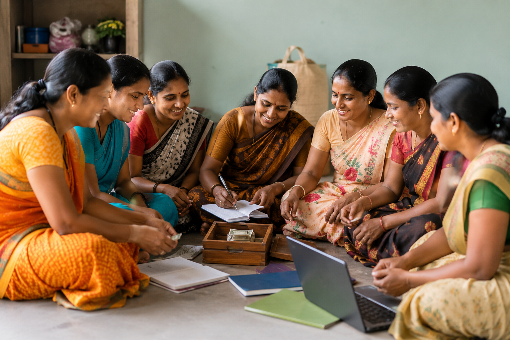
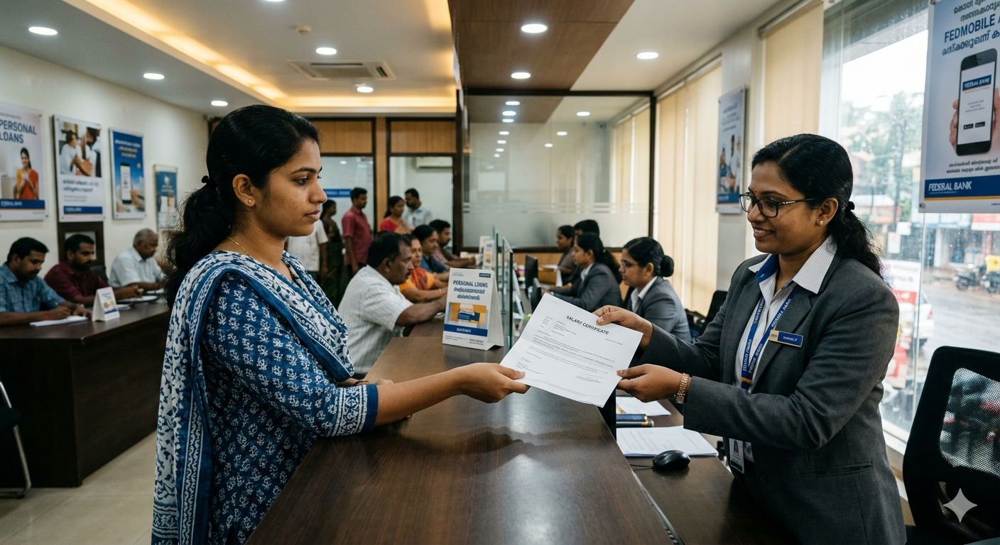
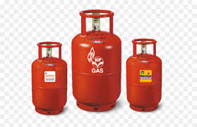
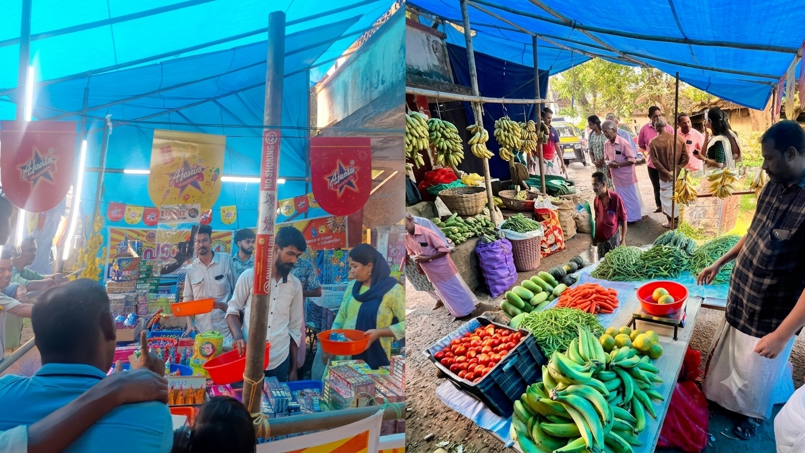
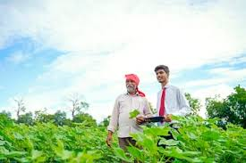

1. Deposits 1. നിക്ഷേപങ്ങൾ
Fixed Depositസ്ഥിര
നിക്ഷേപം

Fixed Deposit is a secure investment scheme that helps you grow your money with attractive interest rates for a fixed tenure. Deposit a lump sum amount and earn assured returns, making it an ideal choice for long-term savings and future financial goals. നിശ്ചിത കാലയളവിലേക്ക് പണം നിക്ഷേപിച്ച് ഉയർന്ന പലിശ വരുമാനം നേടുന്നതിനുള്ള സുരക്ഷിതമായ നിക്ഷേപ പദ്ധതിയാണ് ഫിക്സഡ് ഡെപ്പോസിറ്റ്. നിക്ഷേപ തുകയും കാലാവധിയും അനുസരിച്ച് ആകർഷകമായ പലിശ ലഭ്യമാകുന്നു. ഭാവി ആവശ്യങ്ങൾക്കായി സമ്പാദ്യം വർധിപ്പിക്കാൻ ഏറ്റവും വിശ്വസനീയമായ മാർഗങ്ങളിൽ ഒന്നാണ് ഇത്.
Savings Accountസേവിംഗ്സ്
അക്കൗണ്ട്
Savings Account is a secure savings account designed for daily banking needs and secure savings. It offers the flexibility to deposit and withdraw money at any time, along with interest on the deposit amount. It is an excellent banking service that helps develop financial discipline and savings habits. ദൈനംദിന ബാങ്കിംഗ് ആവശ്യങ്ങൾക്കും സുരക്ഷിതമായ സമ്പാദ്യത്തിനുമായി രൂപകൽപ്പന ചെയ്ത അക്കൗണ്ടാണ് സേവിംഗ്സ് അക്കൗണ്ട്. പണം എപ്പോൾ വേണമെങ്കിലും നിക്ഷേപിക്കാനും പിൻവലിക്കാനും സൗകര്യമുള്ളതിനൊപ്പം നിക്ഷേപ തുകയ്ക്ക് പലിശയും ലഭ്യമാകുന്നു. സാമ്പത്തിക അച്ചടക്കവും സമ്പാദ്യ ശീലവും വളർത്താൻ സഹായിക്കുന്ന മികച്ച ബാങ്കിംഗ് സേവനമാണിത്.
Balamithra Savings Accountബാലമിത്ര സേവിംഗ്സ് അക്കൗണ്ട്
A specially designed savings account to secure your child's future and build a habit of saving. Operated jointly with a parent or guardian, the account offers a safe and rewarding way to build financial security for a child's future while earning attractive interest on deposits. കുട്ടികളുടെ ഭാവിക്കായി പ്രത്യേകമായി തയ്യാറാക്കിയ സമ്പാദ്യ പദ്ധതി. രക്ഷിതാവിനൊപ്പമോ അല്ലെങ്കിൽ ഗാർഡിയനൊപ്പമോ ചേർന്നാണ് ഈ അക്കൗണ്ട് തുറക്കുന്നത്. ഇത് കുട്ടികൾക്ക് അവരുടെ സാമ്പത്തിക ഭാവിക്കായി സുരക്ഷിതവും പ്രോത്സാഹനാത്മകവുമായ രീതിയിൽ സമ്പാദ്യം വളർത്താൻ അവസരം നൽകുന്നു. കൂടാതെ ആകർഷകമായ പലിശയും ഈ അക്കൗണ്ടിന്റെ പ്രത്യേകതയാണ്.
Recurring Depositറിക്കറിംഗ്
നിക്ഷേപം
Save a fixed amount every month and build a substantial corpus over time with great returns. is a smart savings scheme that helps you build wealth through regular monthly deposits. Save a fixed amount every month and enjoy assured returns with attractive interest rates, making it an ideal choice for achieving your future financial goals. എല്ലാ മാസവും ഒരു നിശ്ചിത തുക നിക്ഷേപിച്ച് മികച്ച നേട്ടം കൊയ്യുക. കൃത്യമായ നിർദ്ദിഷ്ട കാലയളവുകളിൽ പണം നിക്ഷേപിച്ച് സമ്പാദ്യം വർദ്ധിപ്പിക്കാൻ സഹായിക്കുന്ന ഒരു സ്മാർട്ട് സേവിംഗ്സ് സ്കീമാണ് ഇത്. ഓരോ മാസവും ഒരു നിശ്ചിത തുക നിക്ഷേപിക്കുകയും ആകർഷകമായ പലിശ നിരക്കിൽ ഉറപ്പുള്ള വരുമാനം നേടുകയും ചെയ്യാം, ഇത് നിങ്ങളുടെ ഭാവി സാമ്പത്തിക ലക്ഷ്യങ്ങൾ കൈവരിക്കാനുള്ള മികച്ച മാർഗ്ഗമാണ്.
Daily Depositപ്രതിദിന
നിക്ഷേപം

Daily Deposit is a convenient investment scheme for securely growing savings through small daily deposits. Ideal for traders, small business owners, and individuals with regular income, this scheme helps meet future financial needs by systematically investing even small amounts. Safe investment and attractive return potential are the main features of this scheme. ചെറുതായി ദിവസേന പണം നിക്ഷേപിച്ച് സുരക്ഷിതമായി സമ്പാദ്യം വളർത്തുന്നതിനുള്ള സൗകര്യപ്രദമായ നിക്ഷേപ പദ്ധതിയാണ് ഡെയ്ലി ഡെപ്പോസിറ്റ്. വ്യാപാരികൾക്കും ചെറുകിട സംരംഭകർക്കും സ്ഥിര വരുമാനമുള്ള വ്യക്തികൾക്കും അനുയോജ്യമായ ഈ പദ്ധതി, ചെറിയ തുകകൾ പോലും ക്രമമായി നിക്ഷേപിച്ച് ഭാവിയിലെ സാമ്പത്തിക ആവശ്യങ്ങൾ നിറവേറ്റാൻ സഹായിക്കുന്നു. സുരക്ഷിത നിക്ഷേപവും ആകർഷകമായ വരുമാന സാധ്യതയും ഈ പദ്ധതിയുടെ പ്രധാന പ്രത്യേകതകളാണ്.
2. Loans 2. വായ്പകൾ
Mortgage Loanമോർട്ട്ഗേജ്
വായ്പ
Mortgage Loan offers financial assistance by leveraging the value of your property. With attractive interest rates, higher loan eligibility, and flexible repayment options, it is an ideal solution for meeting personal, business, educational, or emergency financial needs while retaining ownership of your property. മോർട്ട്ഗേജ് ലോൺ നിങ്ങളുടെ വസ്തുവകകളുടെ ഈടിന്മേൽ എളുപ്പത്തിൽ ലഭ്യമാകുന്ന, ആകർഷകമായ പലിശനിരക്കും ഉയർന്ന വായ്പാ യോഗ്യതയുമുള്ള ഒരു ഫിനാൻഷ്യൽ സഹായമാണ്. ഇത് വ്യക്തിഗത, വിദ്യാഭ്യാസ, ബിസിനസ് അല്ലെങ്കിൽ അത്യാവശ്യ ആവശ്യങ്ങൾക്കായി സ്വത്ത് സ്വന്തമായി നിലനിർത്തിക്കൊണ്ട് തന്നെ വായ്പ നേടാനുള്ള മികച്ചൊരു പരിഹാരമാണ്. സുരക്ഷിതവും എളുപ്പവുമായ വായ്പാ പ്രക്രിയ ഈ പദ്ധതിയുടെ പ്രത്യേകതയാണ്.
Housing Loanഭവന വായ്പ
Home Loan is a financial scheme designed to provide loans for the construction, purchase, or renovation of houses. With attractive interest rates, long repayment periods, and flexible eligibility criteria, it helps families realize their dream of owning a home smoothly and affordably. ഭവന നിർമ്മാണം, വാങ്ങൽ അല്ലെങ്കിൽ നവീകരണം എന്നിവയ്ക്കായി വായ്പ നൽകുന്നതിനുള്ള ഒരു സാമ്പത്തിക പദ്ധതിയാണ് ഭവന വായ്പ. ആകർഷകമായ പലിശ നിരക്കുകൾ, ദീർഘമായ തിരിച്ചടവ് കാലാവധി, എളുപ്പത്തിലുള്ള യോഗ്യതാ മാനദണ്ഡങ്ങൾ എന്നിവ ഉപയോഗിച്ച്, കുടുംബങ്ങൾക്ക് അവരുടെ സ്വപ്ന ഭവനം സുഗമവും താങ്ങാനാവുന്നതുമായ രീതിയിൽ സ്വന്തമാക്കാൻ ഇത് സഹായിക്കുന്നു.
Cash Creditക്യാഷ്
ക്രെഡിറ്റ്

Cash Credit is a flexible short-term loan facility designed to meet the working capital requirements of businesses. It allows business owners to withdraw funds as needed up to a sanctioned limit, paying interest only on the amount utilized. ബിസിനസുകളുടെ പ്രവർത്തന മൂലധന ആവശ്യങ്ങൾ നിറവേറ്റുന്നതിനായി രൂപകൽപ്പന ചെയ്ത ഒരു ഹ്രസ്വകാല വായ്പാ സൗകര്യമാണ് ക്യാഷ് ക്രെഡിറ്റ്. അനുവദിച്ച പരിധി വരെ ആവശ്യമുള്ളപ്പോൾ പണം പിൻവലിക്കാനും, ഉപയോഗിച്ച തുകയ്ക്ക് മാത്രം പലിശ നൽകാനും ഇത് ബിസിനസ്സുകാരെ സഹായിക്കുന്നു.
Business Loanബിസിനസ്സ്
വായ്പ
Empower your business dreams with our customized Business Loans. Whether you are starting a new venture or expanding an existing one, we offer quick approvals and competitive interest rates to fuel your growth. നിങ്ങളുടെ ബിസിനസ്സ് സ്വപ്നങ്ങൾക്ക് ചിറകേകാൻ ഞങ്ങളുടെ ബിസിനസ്സ് വായ്പകൾ. പുതിയ സംരംഭങ്ങൾ തുടങ്ങാനോ നിലവിലുള്ളവ വിപുലീകരിക്കാനോ കുറഞ്ഞ പലിശനിരക്കിലും വേഗത്തിലുള്ള നടപടിക്രമങ്ങളിലൂടെയും ഞങ്ങൾ സാമ്പത്തിക പിന്തുണ നൽകുന്നു.
Self Help Loanസ്വയംസഹായ
വായ്പ

Dedicated financial support for Self Help Groups to promote entrepreneurship and self-reliance among women and marginal communities. We provide group loans at nominal interest rates. സ്ത്രീകളുടെയും സാധാരണക്കാരുടെയും ഉന്നമനത്തിനായി സ്വയം സഹായ സംഘങ്ങൾക്ക് നൽകുന്ന പ്രത്യേക വായ്പകൾ. സ്വയം തൊഴിൽ കണ്ടെത്താനും ജീവിതം മെച്ചപ്പെടുത്താനും വളരെ കുറഞ്ഞ പലിശ നിരക്കിൽ ഞങ്ങൾ സാമ്പത്തിക സഹായം നൽകുന്നു.
Muttathe Mullaമുറ്റത്തെ
മുല്ല
Muttathe Mulla is a special micro-finance initiative by the Government of Kerala, implemented through co-operative banks to free rural households from the exploitation of private money lenders. Get quick, low-interest loans right at your doorstep. ഗ്രാമീണ ജനതയെ സ്വകാര്യ പണമിടപാടുകാരുടെ ചൂഷണത്തിൽ നിന്ന് മോചിപ്പിക്കുന്നതിനായി സഹകരണ ബാങ്കുകൾ വഴി നടപ്പിലാക്കുന്ന കേരള സർക്കാരിന്റെ പ്രത്യേക മൈക്രോ ഫിനാൻസ് പദ്ധതിയാണ് മുറ്റത്തെ മുല്ല. കുറഞ്ഞ പലിശ നിരക്കിൽ വായ്പ നിങ്ങളുടെ വീട്ടുപടിക്കൽ ലഭ്യമാക്കുന്നു.
Surety Loanജാമ്യ വായ്പ
Access funds instantly for your personal or emergency needs with our Surety Loans. By providing reliable personal guarantors without the need to pledge physical assets, you can secure quick financing with easy repayment options. നിങ്ങളുടെ വ്യക്തിപരമായോ അടിയന്തിരമായോ ഉള്ള ആവശ്യങ്ങൾക്ക് ജാമ്യ വായ്പകൾ പ്രയോജനപ്പെടുത്താം. വസ്തുവകകൾ ഈട് നൽകാതെ തന്നെ വിശ്വസ്തരായ വ്യക്തികളുടെ ജാമ്യത്തിൽ വേഗത്തിൽ പണം ലഭ്യമാക്കുന്ന പദ്ധതിയാണിത്.
Kissan Credit Cardകിസാൻ
ക്രെഡിറ്റ് കാർഡ്
Kissan Credit Card (KCC) scheme provides farmers with timely and adequate credit for their agricultural operations. Enjoy hassle-free access to funds for seeds, fertilizers, and equipment. കർഷകർക്ക് അവരുടെ കാർഷിക ആവശ്യങ്ങൾക്കായി സമയബന്ധിതമായി സാമ്പത്തിക സഹായം നൽകുന്ന പദ്ധതിയാണ് കിസാൻ ക്രെഡിറ്റ് കാർഡ് (KCC). വിത്തുകൾ, വളം, മറ്റ് കാർഷിക ഉപകരണങ്ങൾ എന്നിവ വാങ്ങാൻ കുറഞ്ഞ പലിശയിൽ ഇത് സഹായിക്കുന്നു.
Salary Certificate Loanശമ്പള
സർട്ടിഫിക്കറ്റ് വായ്പ

A hassle-free personal loan tailored for salaried employees. Based on your monthly salary certificate, you can quickly avail funds for medical emergencies, education, or home renovation with minimal documentation. ശമ്പളക്കാരായ ജീവനക്കാർക്കായി പ്രത്യേകം തയ്യാറാക്കിയ വായ്പാ പദ്ധതി. നിങ്ങളുടെ മാസശമ്പള സർട്ടിഫിക്കറ്റിന്റെ അടിസ്ഥാനത്തിൽ ചികിത്സ, വിദ്യാഭ്യാസം, വിവാഹം തുടങ്ങിയ ആവശ്യങ്ങൾക്കായി കുറഞ്ഞ രേഖകളോടെ വേഗത്തിൽ വായ്പ ലഭ്യമാക്കുന്നു.
Gold Loanസ്വർണ്ണപ്പണയം
Unlock the power of your gold ornaments with our instant Gold Loans. We offer the highest per-gram rate, complete security for your gold, and the lowest interest rates, ensuring you get immediate cash. നിങ്ങളുടെ സ്വർണ്ണാഭരണങ്ങൾക്ക് ഏറ്റവും ഉയർന്ന തുക നൽകുന്ന ഇൻസ്റ്റന്റ് ഗോൾഡ് ലോണുകൾ. പൂർണ്ണ സുരക്ഷയോടുകൂടി, ഏറ്റവും കുറഞ്ഞ പലിശനിരക്കിൽ നിങ്ങളുടെ അടിയന്തിര ആവശ്യങ്ങൾക്ക് വേഗത്തിൽ പണം ലഭ്യമാക്കുന്നു.
3. MSS 3. എം.എസ്.എസ്
MSSഎം.എസ്.എസ്
The Member Surety Scheme (MSS) is designed to provide mutual financial assistance and security among bank members. It fosters co-operation and ensures access to reliable emergency funds. ബാങ്ക് അംഗങ്ങൾക്കിടയിൽ പരസ്പര സഹായവും സാമ്പത്തിക ഭദ്രതയും ഉറപ്പാക്കുന്ന പദ്ധതിയാണ് മെമ്പർ സ്യൂരിറ്റി സ്കീം (MSS). അംഗങ്ങളുടെ കൂട്ടായ ജാമ്യത്തിൽ അത്യാവശ്യഘട്ടങ്ങളിൽ സാമ്പത്തിക സഹായം ഇതിലൂടെ ഉറപ്പാക്കുന്നു.
4. Other Services 4. മറ്റു സേവനങ്ങൾ
Manure Shopവളം ഡിപ്പോ
The Manure Shop is a vital facility that ensures farmers receive high-quality fertilizers and agricultural inputs when they need them. The shop provides a reliable supply of various chemical and organic fertilizers, helping to improve agricultural productivity and ensure better crop yields. കർഷകർക്ക് ആവശ്യമായ ഗുണമേന്മയുള്ള വളങ്ങൾ സമയബന്ധിതമായി ലഭ്യമാക്കുന്നതിനായി പ്രവർത്തിക്കുന്ന സേവന കേന്ദ്രമാണ് വളം ഡിപ്പോ. കാർഷിക ഉൽപ്പാദനക്ഷമത വർധിപ്പിക്കുന്നതിനും മികച്ച വിളവ് ഉറപ്പാക്കുന്നതിനുമായി വിവിധ തരത്തിലുള്ള രാസവളങ്ങളും ജൈവവളങ്ങളും ഇവിടെ ലഭ്യമാണ്.
Neethi Gasനീതി ഗ്യാസ്

Neethi Gas provides safe, dependable, and efficient LPG distribution services, ensuring customers receive quality cooking gas with timely delivery and excellent support. Dedicated to convenience and safety, Neethi Gas is a trusted energy partner for households and businesses. നീതി ഗ്യാസ് സുരക്ഷിതവും വിശ്വസനീയവും കാര്യക്ഷമവുമായ എൽ.പി.ജി. (LPG) വിതരണ സേവനങ്ങൾ നൽകുന്നു. ഗുണമേന്മയുള്ള പാചക വാതകം സമയബന്ധിതമായി ഉപഭോക്താക്കൾക്ക് എത്തിക്കുന്നതോടൊപ്പം മികച്ച ഉപഭോക്തൃ സേവനവും പിന്തുണയും ഉറപ്പാക്കുന്നു. സൗകര്യത്തിനും സുരക്ഷയ്ക്കും മുൻഗണന നൽകുന്ന നീതി ഗ്യാസ്, വീടുകൾക്കും വ്യാപാര സ്ഥാപനങ്ങൾക്കും വിശ്വസ്തമായ ഊർജ്ജ പങ്കാളിയാണ്.
Locker Facilityലോക്കർ
സൗകര്യം
Safe deposit lockers are an essential service for individuals who need to store valuable items securely. These lockers provide a protected space for important documents, jewelry, and other valuables, ensuring they remain safe from theft, damage, or loss. With advanced security measures and controlled access, safe deposit lockers offer peace of mind and reliable protection for your most important possessions. ലോക്കർ സൗകര്യം നിങ്ങളുടെ വിലപ്പെട്ട ആഭരണങ്ങളും രേഖകളും മറ്റ് പ്രധാന വസ്തുക്കളും സുരക്ഷിതമായി സംരക്ഷിക്കുന്നതിനായി ഒരുക്കിയിരിക്കുന്ന വിശ്വസനീയ സേവനമാണ്. ഉയർന്ന സുരക്ഷാ മാനദണ്ഡങ്ങളും സ്വകാര്യതയും ഉറപ്പുനൽകുന്ന ഈ സേവനം നിങ്ങളുടെ സമ്പത്തിന്റെ സുരക്ഷയ്ക്ക് മികച്ച പരിഹാരമാണ്.
Festival Fairsഉത്സവ
വിപണികൾ

Organizing special seasonal fairs to provide essential goods to the public at subsidized rates during festivals.Festival markets provide essential goods at reasonable prices to meet the needs of the festive season. Quality products, attractive offers, and reliable service ensure a great shopping experience for customers. ഉത്സവ സീസണുകളിൽ പൊതുജനങ്ങൾക്ക് സബ്സിഡി നിരക്കിൽ അവശ്യസാധനങ്ങൾ ലഭ്യമാക്കുന്നതിനുള്ള പ്രത്യേക വിപണികൾ. ഉത്സവ വിപണികൾ ഉത്സവകാല ആവശ്യങ്ങൾ നിറവേറ്റുന്നതിനായി വിവിധ ഉൽപ്പന്നങ്ങൾ ന്യായമായ വിലയിൽ ലഭ്യമാക്കുന്ന പ്രത്യേക വിപണികളാണ്. ഗുണമേന്മയുള്ള ഉൽപ്പന്നങ്ങൾ, ആകർഷകമായ ഓഫറുകൾ, വിശ്വാസ്യതയുള്ള സേവനം എന്നിവയിലൂടെ ഉപഭോക്താക്കൾക്ക് മികച്ച ഷോപ്പിംഗ് അനുഭവം ഉറപ്പാക്കുന്നു.
Farmers Awareness Classesകർഷക
ബോധവൽക്കരണ ക്ലാസുകൾ

Conducting regular training and awareness classes for farmers to introduce modern agricultural techniques and practices. These awareness classes aim to enhance farmers' knowledge and skills, providing practical insights into modern farming methods, production enhancement, sustainable agriculture, and agricultural technologies, thereby empowering them to achieve better yields and income. ആധുനിക കാർഷിക രീതികളും സാങ്കേതികവിദ്യകളും കർഷകരെ പരിചയപ്പെടുത്തുന്നതിനായി നടത്തുന്ന ബോധവൽക്കരണ ക്ലാസുകൾ. കർഷക ബോധവൽക്കരണ ക്ലാസുകൾ കർഷകരുടെ അറിവും കഴിവും വർധിപ്പിക്കുന്നതിനായി സംഘടിപ്പിക്കുന്ന പരിശീലന പരിപാടികളാണ്. ആധുനിക കൃഷിരീതികൾ, ഉൽപ്പാദന വർധനവ്, സുസ്ഥിര കൃഷി, കാർഷിക സാങ്കേതികവിദ്യകൾ എന്നിവയെക്കുറിച്ചുള്ള പ്രായോഗിക അറിവ് നൽകുന്നതിലൂടെ കർഷകരെ കൂടുതൽ ശക്തരാക്കുകയും മികച്ച വിളവും വരുമാനവും നേടാൻ സഹായിക്കുകയും ചെയ്യുന്നു.